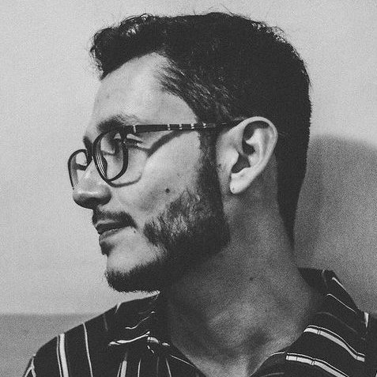

Bio

Nacido en Medellín, Antioquia, Julian Loaiza comenzó su carrera
musical a los 15 años. En 2012 comienza sus estudios en Contrabajo Jazz en la Universidad
EAFIT con Eduardo Gonzalez.
Ha sido músico de sesión para diversos artistas locales
como: Yina Rosé, Solo Valencia, Federico Goes, Big Band EAFIT, Chalupa Travel, Hombre
Memoria, Metropolizón, entre otros. Grabó para uno de los tracks la película "Smiling
Lombana". Además ha participado en 4 giras internacionales: Metropolizón(España,
2016), Chalupa Travel (Cuba, 2016), Hombre Memoria (México, 2018) y
Chalupa Travel (México, 2019).